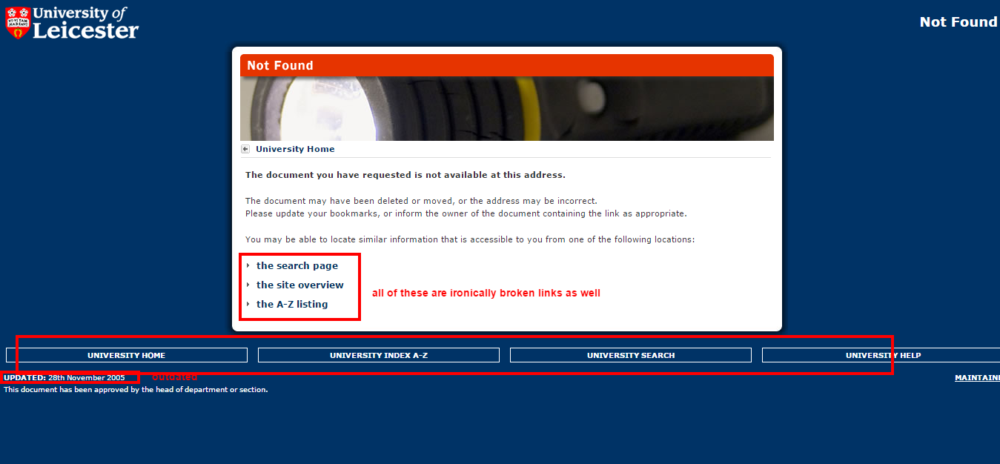
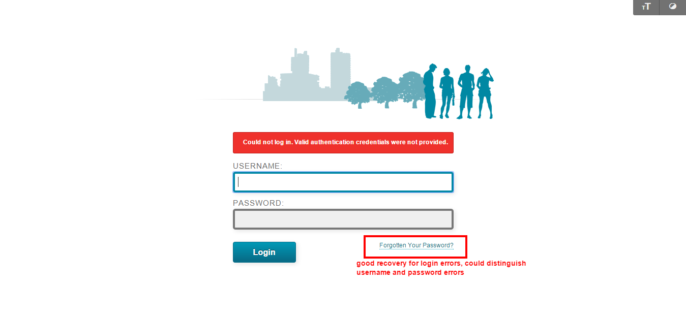

Error Recovery
Error messages should be expressed in plain language (no codes), precisely indicate the problem, and constructively suggest a solution.
Recovery from Page Errors{kind=link}
When the user enters in a wrong url, the page not found error message does not provide sufficient help to recover from the error. The homepage is the only functional link, while the suggestion "to locate similar information" provides broken, irrelevant links. While the general listings may be useful for the user to navigate where they intended to go to, the outdated error page does not try to predict what type of error they made. Instead, the general listings may cause more frustration for the user to search through a long list of possible pages.This page should provide relevent information about common errors such as "did you mean...?" or common FAQs for possible solutions to their users.
Recovery from Login Errors{kind=link}
The website, however, does provide sufficient recovery from login errors from the Blackboard, student, and web editor pages. In bright red, the error message diagnoses the issue and provides recovery options in the usual location of login pages.